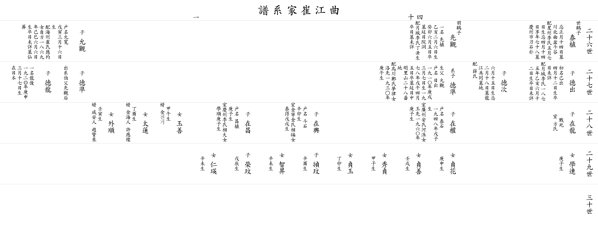

| 곡 강 최 가 계 보 |
| 이전☜ 쪽 40-1 ☞다음 |
| 26세 |
▲ 태식 泰植 |
아버지 ▲세학 (世鶴)의 아들 제삿날 1월14일 묘 경주시 천북면 분두곡(盆斗谷) 할머니 성주이씨 5월 5일생 제삿날 4월14일 향년 78세 묘 경주시 도석박(刀石朴) |
▲ 선관 先觀 |
아버지 ▲우학 (羽鶴)의 맏아들 일명 선식(先植) 1875년 (乙亥) 2월 6일생 1963년(癸卯) 6월 5일 별세 묘 연일읍 원동 할머니 월성이씨 1877년(丁丑)생 졸일 묘 미상 |
▲ 윤관 允觀 |
아버지 ▲우학 (羽鶴)의 둘째 아들 호명 윤관(允寬) 1858년(戊寅) 3월16일생 할머니 해주최씨 응표(應杓)의 따님 자방(自方) 1869년(己巳) 6월 6일생 졸일 미상 묘 선장 |
||||||||||
| 27세 |
덕출 德出 |
초명 기출(己出) 4월12일생 졸일 미상 할머니 월성이씨 1875년(乙亥) 6월12일생 졸일 미상 |
덕차 德次 |
6월15일생 제삿날 2월18일 묘 용강 공동묘지 할머니 설씨 |
계자 덕준 德準 |
생부 윤관(允觀) 호명 일출(日出) 1910년(庚戌) 3월 7일생 1978년(戊午) 4월 5일 별세 묘 연일읍 중명리 산 28번지 할머니 오천정씨 몽율(夢律)의 따님 낙선(洛先) 1930년(庚午)생 딸 옥선(玉善) 갑오생 사위 김진기 딸 태련(太蓮) 정유생 사위 김해인 허응찬(許應燦) 딸 외순(外順) 임인생 사위 함안인 조찬래(趙贊來) |
덕준 德準 |
백부 선관(先觀)의 후계를 이음 |
덕룡 德龍 |
일명 용준(龍俊) 1920년(庚申) 3월17일생 일본 거주 |
||||||
| 28세 |
재룡 在龍 |
전사(戰死) 아내 방씨 |
재권 在權 |
호명 태석(泰石) 1948년(戊子)생 아내 광주안씨 하수(河洙)의 따님 옥선(玉先) 경자생 딸 정화(貞花) 경신생 딸 정선(貞善) 임술생 딸 수정(秀貞) 갑자생 딸 정옥(貞玉) 정묘생 |
재흥 在興 |
호명 두석(斗石) 신묘생 아내 김녕김씨 상복(相福)의 따님 태득(泰得) 무술생 딸 지승(智昇) 신미생 |
재창 在昌 |
호명 창식(昌植) 경자생 아내 경주이씨 상대(相大)의 따님 학순(學順) 경자생 딸 인영(仁瑛) 신미생 |
||||||||
| 29세 |
학련 學連 |
경자생 |
정민 禎玟 |
신유생 |
영민 榮玟 |
무진생 | ||||||||||
| 이전☜ 쪽 40-1 ☞다음 |
|  |